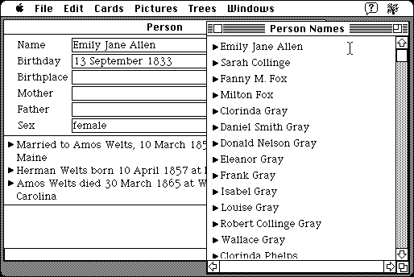

Download
gene-421-68k.zip (958K) Gene 4.2.1 68K repackaged into a zipped hfs disk image and checksum file. The disk image can be mounted with Mini vMac.
gene-421-68k.hqx (1.3M) Gene 4.2.1 68K in the original format.
copyright: Diana and David Eppstein
mod date: Dec 11, 1997
license: shareware
official url :
Gene Macintosh Genealogy Software
For “maintaining databases of family history and other genealogical information.” Requires System 7. (The included “HTML Viewer” application does not run on a Macintosh Plus, requiring Color Quickdraw. It will run a a Macintosh II.)

If you find these downloads useful, please consider helping the Gryphel Project, which hosts them.
Here are the md5 checksums for the downloads, signed with Gryphel Key 5:
--------- GRY SIGNED TEXT --------- d8dce5ea4c8fb49f78228513f91ae061 gene-421-68k.zip 684e292f2512ddd0907afbb96ddc4d8b gene-421-68k.hqx ------- BEGIN GRY SIGNATURE ------- Gry/4Xa8CFcUzxdN/O1JlrwUf+3JxpMmZGLpyfKj5U7nKZfBoLiAoJNRm0pUWcrk 6VYHNdpBulOeVQ/hyC6BZtxqQ10VCCEeFZX4/zseCOXla1J7E/U325TbbFHeOn55 yqxY6mWNoWY6IY5u6xcOX8bYYyrhe2adbEHekBkbuKSVsvuqD8RFWrNPlkWtnUwz -------- END GRY SIGNATURE --------